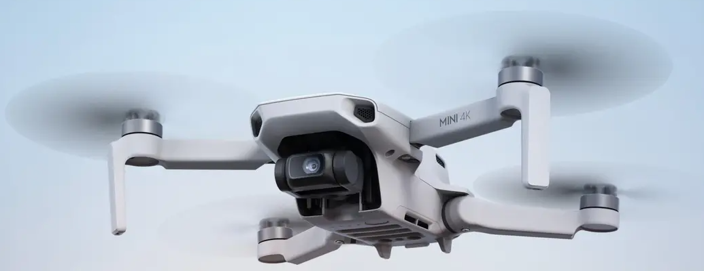

Drone aan Huis
Informatie & veelgestelde vragen
Veelgestelde vragen (FAQ)
❓ Wat gebeurt er bij slecht weer?
Bij slecht weer kan mijn drone niet vliegen en zijn er ook geen mooie foto's te maken. We spreken dan gewoon een andere dag af.
❓ Krijg ik alle beelden?
Ja, je krijgt alle beelden op hoge kwaliteit. Je ontvangt een downloadlink met de ruwe foto's en video's.
❓ Hoe spreken we het tijdstip af?
Nadat je een pakket hebt gekozen en het formulier hebt ingestuurd, neem ik contact met je op over het exacte tijdstip. Ik stem het graag met je af.
❓ Hoe lang van tevoren moet ik boeken?
Minimaal 1 dag van tevoren, dan kan ik mijn drone opladen en zorg dat alles klaar staat.
❓ Met welke drone kom je?
Ik kom met de DJI Mini 4K, die je hieronder op het plaatje ziet. Ik kan hiermee maximaal een half uurtje vliegen. Hij kan tegen windkracht 5, maar daarmee vlieg ik liever niet.
